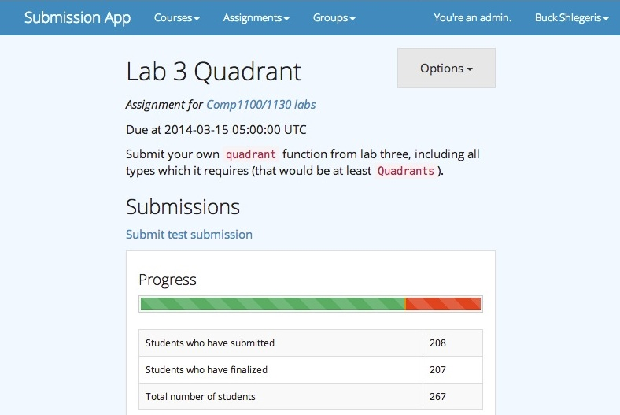

Buck Shlegeris
GitHub, Facebook, Email, LinkedIn, resume
I'm a web developer, musician, and effective altruist from Australia, living in San Francisco.
Currently, I work at App Academy, a Ruby on Rails coding bootcamp, as a teaching assistant.
Background
I studied computer science and physics at the Australian National University for two years. At the end of 2012, I had completed enough courses to get a computer science major, but was becoming frustrated with the pace of university life. So I moved to San Francisco for App Academy. After the nine week course, App Academy offered me a job teaching the course I'd just done. I've been happily working there since then.
Programming
My particular intrests in programming are:
- Education: I've written software for physics and computer science education, and work teaching web development.
- Functional programming: I used to teach Haskell, and presented on some theoretical properties of it. I love static typing, and desperately miss it in the scripting languages I end up using most of the time.
Past projects
SubmissionApp
I wrote an as-yet-unnamed submission app for my university. It's currently being used in the Intro to Programming and Algorithms course. It's in Rails, with some shell scripting.
It has a variety of nifty features, including support for automatic compilation, test cases, and grading.
I am enthusiastic about the prospect of developing this software into the future, and modifying it for the use of other courses which want it.
Graphical Equation Manipulator
GEM is physics software to intuitively manipulate equations.
I invented the concept and wrote a Python prototype. With my supervisor Craig Savage, I ran user studies on it, and found evidence of its effectiveness. After securing some funding, I supervised and assisted Matt Alger as he ported the software to a Coffeescript web app. We're still working on finishing that and doing more user studies.
Along the way, Matt and I wrote Coffeequate, currently the best Javascript computer algebra system on the market. We just need to give it a few upgrades before we can release a v1.0.
Other small, interesting projects
Zip classifier
In a fit of frustration after spending about eight hours trying to install CompLearn on a variety of operating systems, I reimplemented the backend functionality one night in Python. It does cool things like reproducing phylogenetic trees based on the DNA sequences of various mammals.
TISE flux solver
I wrote a program which takes stepwise potential functions and solves the time-independent Schroedinger equation for a particle flux over them. This lets us do fun things like view the transmission amplitude of a finite square well as a function of particle frequency.
Brute force approximation of Solomonoff prior
The Solomonoff prior is a probability distribution over binary strings. So for example, if you know you're going to see a string, "000" seems more likely than "101100100110100101": Solomonoff's prior formalises that. It (sort of) defines the prior of a string as the proportion of Turing machines which output that string, with simple TMs having higher weight. This is incomputable, because of the halting problem.
However, that didn't stop me from writing a Python script which generated random Turing machines and ran them for ages, then saved their output to a file. I ran this script on about twenty computers overnight, then collated the result of the trillion trials into one file which I then could use for sequence prediction. It correctly predicted things like the next character in the sequence "01010101". Tragically, I've lost that output file.
One of the big items on my to-do list is rewriting my Turing machine simulator to be heavily optimized, then running a slight variation of the experiment again. I will update this when I've done that.
Data structures stuff
We can use a mathematical tool called generating functions to analyse the behavior of data structures. I presented on this at a student conference. I wrote a short script for the project: my code, and an explanation, are available here.
Music
I write songs and played them with my band Buck et al in Canberra. Currently I'm writing lots of music, and hoping to record it in the Bay Area sometime.
Effective altruism
I want to use my career to help the world. For someone like me, the best way to do that is probably trying to maximise my income and then spending my money on useful things. This strategy is known as earning to give.
I identify as part of the Effective Altruist movement, which has sprung up in recent years around organizations like Giving What We Can, Givewell, and the Center for Effective Altruism.
I am very lucky to have had so many strokes of good fortune in my place and time of birth. Making the world better for those less fortunate is the least I can do.